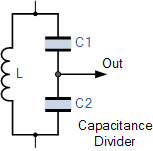
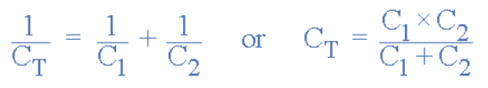

An amplifier circuit simply increases the signal strength. But while amplifying, it just increases the strength of its input signal whether it contains information or some noise along with information. This noise or some disturbance is introduced in the amplifiers because of their strong tendency to introduce hum due to sudden temperature changes or stray electric and magnetic fields. Therefore, every high gain amplifier tends to give noise along with signal in its output, which is very undesirable.
The noise level in the amplifier circuits can be considerably reduced by using negative feedback done by injecting a fraction of output in phase opposition to the input signal.
The feedback-amplifier can be defined as an amplifier which has feedback lane that exists between o/p to input. In this type of amplifier, feedback is the limitation which calculates the sum of feedback given in the following amplifier. The feedback factor is the ratio of the feedback signal and the input signal.

1. Positive Feedback Amplifier:
The positive feedback can be defined as when the feedback current otherwise voltage is applied for increasing the i/p voltage, then it is named as positive feedback. Direct feedback is another name of this positive feedback. Because positive feedback generates unnecessary distortion; it is not often used in amplifiers. But, it amplifies the original signal power and can be used in oscillator circuits.
2. Negative Feedback Amplifier:
The negative feedback can be defined as if the feedback current otherwise voltage can be applied for reducing the amplifier i/p, then it is called as negative feedback. Inverse feedback is another name of this negative feedback. This kind of feedback is regularly used in amplifier circuits.

An Oscillator is basically an Amplifier with “Positive Feedback”, or regenerative feedback (in-phase) and without any external input signal that generates an output waveform of a desired frequency.
An oscillator is basically a waveform generator which generates an output waveform, which oscillates with constant amplitude & constant desired frequency.
The frequency of oscillation at which sinusoidal oscillator operates is the frequency for which the total shift introduced, as the signal proceeds from the input terminals, through the amplifier and feedback network, and back again to the input, is precisely zero (or an integral multiple of 2*Π).
Stated simply the condition A*β = -1 at ω= ωo, i.e. the magnitude of loop gain should be one and phase of loop gain should be unity (the feedback network introduces 1800 phase shift, the other 1800 phase shift is provided by Amplifier) is called Barkhausen criterion.

A closed loop system with negative feedback can be represented by a transfer function = A/(1+A*β). Often feedback network consists of only resistive elements and is independent of frequency but amplifier gain is a function of frequency. Hence the loop gain A*β is a function of frequency. There may exist a frequency ωo at which its magnitude is one and phase is 1800 i.e. A*β = -1 (Barkhausen criterion).
The basic configuration of the Colpitts Oscillator resembles that of the Hartley Oscillator but the difference this time is that the centre tapping of the tank sub-circuit is now made at the junction of a “capacitive voltage divider” network instead of a tapped autotransformer type inductor as in the Hartley oscillator.

The Colpitts oscillator uses a capacitive voltage divider network as its feedback source. The two capacitors, C1 and C2 are placed across a single common inductor, L as shown. Then C1, C2 and L form the tuned tank circuit with the condition for oscillations being: XC1 + XC2 = XL, the same as for the Hartley oscillator circuit.
The advantage of this type of capacitive circuit configuration is that with less self and mutual inductance within the tank circuit, frequency stability of the oscillator is improved along with a more simple design.
As with the Hartley oscillator, the Colpitts oscillator uses a single stage bipolar transistor amplifier as the gain element which produces a sinusoidal output. Consider the circuit below.
The emitter terminal of the transistor is effectively connected to the junction of the two capacitors, C1 and C2 which are connected in series and act as a simple voltage divider. When the power supply is firstly applied, capacitors C1 and C2 charge up and then discharge through the coil L. The oscillations across the capacitors are applied to the base-emitter junction and appear in the amplified at the collector output.
Resistors, R1 and R2 provide the usual stabilizing DC bias for the transistor in the normal manner while the additional capacitors act as a DC-blocking bypass capacitors. A radio-frequency choke (RFC) is used in the collector circuit to provide a high reactance (ideally open circuit) at the frequency of oscillation, ( ƒr ) and a low resistance at DC to help start the oscillations.
The required external phase shift is obtained in a similar manner to that in the Hartley oscillator circuit with the required positive feedback obtained for sustained undamped oscillations. The amount of feedback is determined by the ratio of C1 and C2. These two capacitances are generally “ganged” together to provide a constant amount of feedback so that as one is adjusted the other automatically follows.
The frequency of oscillations for a Colpitts oscillator is determined by the resonant frequency of the LC tank circuit and is given as:
where CT is the capacitance of C1 and C2 connected in series and is given as:

The configuration of the transistor amplifier is of a Common Emitter Amplifier with the output signal 1800 out of phase with regards to the input signal. The additional 1800 phase shift require for oscillation is achieved by the fact that the two capacitors are connected together in series but in parallel with the inductive coil resulting in overall phase shift of the circuit being 0 or 3600.
The amount of feedback depends on the values of C1 and C2. We can see that the voltage across C1 is the same as the oscillators output voltage, Vout and that the voltage across C2 is the oscillators feedback voltage. Then the voltage across C1 will be much greater than that across C2.
Therefore, by changing the values of capacitors, C1 and C2 we can adjust the amount of feedback voltage returned to the tank circuit. However, large amounts of feedback may cause the output sine wave to become distorted, while small amounts of feedback may not allow the circuit to oscillate.
Then the amount of feedback developed by the Colpitts oscillator is based on the capacitance ratio of C1 and C2 and is what governs the excitation of the oscillator. This ratio is called the “feedback fraction” and is given simply as: